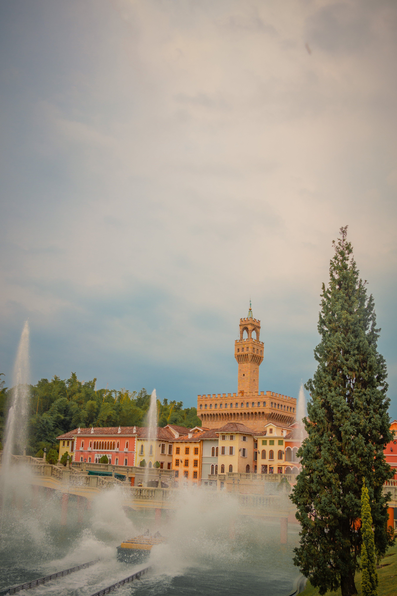
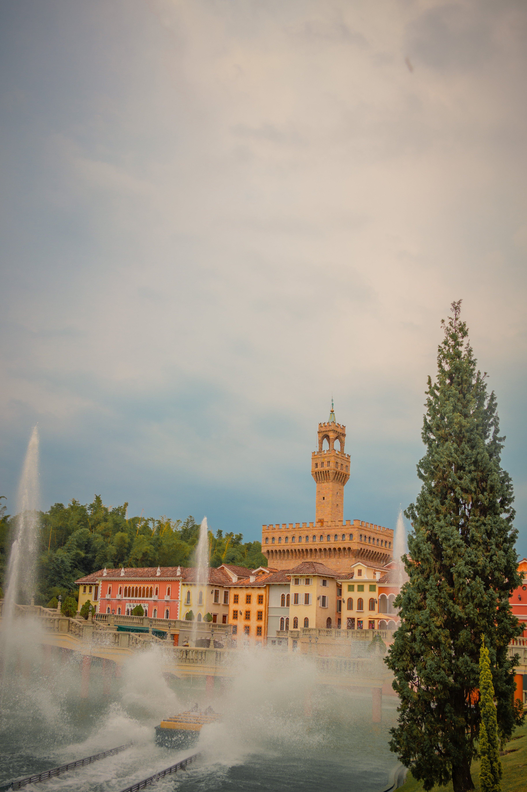

Galeria de Imágenes
 |
 |
 |
 |
 |
|
 |
 | |
Itinerario Recomendado (10:00AM - 6:00PM)
Como parte de la experiencia te sugerimos seguir el siguiente itinerario:
En el Gran Parque de Diversiones Xetulul encontrarás Magia y Diversión para toda la familia.
Descubre la gran variedad de actividades que puedes realizar.
Disfruta de impresionantes
atracciones y emocionantes juegos electromecánicos para grandes y chicos, espectaculares
shows ambulantes y el fantástico Show
de Magia del Gran Teatro de Francia, extraordinarias
tiendas de regalos y diversidad de restaurantes para todos los gustos en las diferentes
plazas br que brindan
un escenario arquitectónico donde se muestra el origen y la historia de Guatemala.
Domingo, viernes, sábado, días festivos de 10:00 a 18:00 hrs.
Jueves de 10:00 a 17:00 hrs.
Índice
|
|
|
|
|
|
|
 | |
Como parte de la experiencia te sugerimos seguir el siguiente itinerario:
| Hora | Actividad |
|---|---|
| 10:00 AM |
Entrada y primera exploración
|
| 11:00 AM |
Atracciones infantiles y familiares
|
| 12:00 PM |
Emoción en la montaña rusa
|
| 1:00 PM |
Almuerzo
|
| 2:00 PM |
Juegos mecánicos clásicos
|
| 4:00 PM |
Show de magia y entretenimiento
|
| 5:30 PM |
Despedida
|
| Plaza Temática | Atracciones Emocionantes | Atracciones Familiares / Niños | Shows / Otras Actividades |
|---|---|---|---|
| Plaza Chapina (Guatemala) | La Avalancha | Transcostero (tren panorámico) | Recorrido cultural por plazas |
| Plaza Pueblo Guatemalteco | Jurakán | El Choconoy, Ratón Feliz, Club de Aviación | Tiendas y gastronomía local |
| Plaza España | El Galeón | Sillas Voladoras | Ambiente y arquitectura española |
| Plaza Italia | La Girándola | Góndola Salpicona, Pico Cervino | Réplica de la Fontana di Trevi |
| Plaza Alemania / Suiza | Estrugensen | Arquitectura alpina y restauración | |
| Plaza Francia | Carros Chocones, Carrusel de dos pisos | Le Gran Theatre (show de magia) | |
| Pueblo Caribeño | Los Corsarios, La Balsita Loca, Happy Swing | Embarcación acuática estilo Castillo de San Felipe | |
| Pueblo Fantasía | El Mastil, Las Bailarinas, Tren de la Alegría | Mariposas, El Recreo, zona infantil | Temática de fantasía para niños |
| General | Trenópolis (maquetas de trenes a escala) | Tiendas, restaurantes, shows ambulantes |